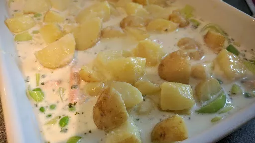

Leek and salmon pie

Gluten-free: use gluten-free plain flour in the sauce.
Servings: 4
Total: 25 mins
Ingredients
- 5 medium potatoes, cut into 2 cm dice
- 75 g butter
- 2 medium leeks, sliced
- 2 tbsp plain flour
- 1½ mugs milk
- 300 ml cream, double or single
- 4 salmon steaks, cut into bitesized pieces
- 1 mug frozen peas, defrosted
- 2 tbsp freshly chopped dill
- ½ mug Parmesan
Instructions
- Preheat the oven to 180°C/Gas 6. Grease a large casserole dish.
- Put the
potatoes5 medium
on to boil and simmer for 10 minutes. Drain and return to the pan. Add 25 g of the butter75 g
and shake the pan around to distribute.
- Add another 25 g of the
butter75 g
to a large frying pan and fry the leaks until they begin to soften and brown. Put the leeks2 medium
in the casserole dish along with the defrosted peas1 mug
.
- Add the last 25 g
butter75 g
to the frying pan along with the flour2 tbsp
, and cook on a medium heat until the flour2 tbsp
is absorbed. Add the milk1½ mugs
and cream300 ml
to the pan and gently bring to the boil, stirring all the time. Add the fish4
, peas1 mug
and dill2 tbsp
to the sauce and cook, on a medium heat, for 2 minutes. The fish4
does not need to be cooked through as it will go in the oven.
- Pour the sauce and the
fish4
into the casserole dish and mix with the leeks2 medium
. Pile the potatoes5 medium
on top and sprinkle the Parmesan½ mug
over.
- Place in the oven for 20 minutes. The top should be lightly browned.
Nosh: Quick & Easy
Short Link
Long Link

 Gluten Free
Gluten Free